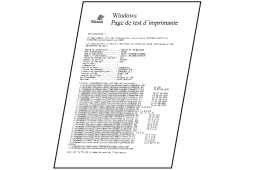

Si vous ne parvenez pas à imprimer alors que votre imprimante est reliée à l'ordinateur par un câble USB, essayez de résoudre le problème à l'aide des questions ci-dessous.
<Question 1> L'imprimante est-elle allumée ? (Le témoin  (Alimentation) est-il allumé ?)
(Alimentation) est-il allumé ?)
(Alimentation) est-il allumé ?)
|
Allumée
|
Passez à <Question 2>.
|
|
Eteinte
|
Allumez l'imprimante.
|
|
Impossible de l'allumer
|
<Question 2> Le témoin  (Papier) clignote-t-il ?
(Papier) clignote-t-il ?
(Papier) clignote-t-il ?
|
Clignotant
|
Chargez correctement le papier, puis appuyez sur la touche [
 ] (Papier). ] (Papier). |
|
Non clignotant
|
Passez à <Question 3>.
|
<Question 3> Le câble USB est-il correctement branché ?
|
Connexion établie
|
Testez la solution suivante.
Si vous utilisez un concentrateur, branchez directement l'imprimante sur l'ordinateur.
Si vous utilisez un long câble USB, remplacez-le par un câble plus court.
Si vous avez un autre câble USB, utilisez-le.
 Si l'impression ne fonctionne toujours pas, passez à <Question 4>. |
|
Pas de connexion
|
Branchez le câble correctement.
|
<Question 4> Pouvez-vous imprimer une page de test sous Windows ?

|
Impression possible
|
Le problème n'est pas lié à l'imprimante ni au pilote.
Vérifiez les options d'impression dans l'application.
|
|
Impression impossible
|
Passez à <Question 5>.
|
<Question 5> Le port à utiliser est-il correctement sélectionné ?
|
Sélectionné
|
Passez à <Question 6>.
|
|
Non sélectionné
|
Sélectionnez le port correct.
|
|
Le port à utiliser est introuvable.
|
Réinstallez le pilote d'imprimante.
|
<Question 6> La communication bidirectionnelle est-elle activée ?
|
Activée
|
Passez à <Question 7>.
|
|
Non activée
|
Activez la communication bidirectionnelle, puis redémarrez l'ordinateur et l'imprimante.
|
<Question 7> Testez les éléments suivants.
Invalidez les logiciels résidents, y compris les logiciels de sécurité.
Si d'autres périphériques sont connectés à l'ordinateur via une connexion USB, débranchez ceux dont vous n'avez pas besoin.
Si d'autres pilotes ou logiciels de périphériques USB sont installés sur l'ordinateur, désinstallez ceux dont vous n'avez pas besoin.
Connectez le câble USB sur un autre port USB de l'ordinateur.
Connectez l'imprimante sur un autre ordinateur avec câble USB.
Si l'impression ne fonctionne toujours pas, passez à <Question 8>.
<Question 8> Réinstallez le pilote d'imprimante.
Si l'impression ne fonctionne toujours pas, passez à <Question 9>.
<Question 9> Désinstallez le pilote USB, puis réinstallez le pilote d'imprimante.
Si l'impression ne fonctionne toujours pas, contactez votre distributeur régional Canon agréé.